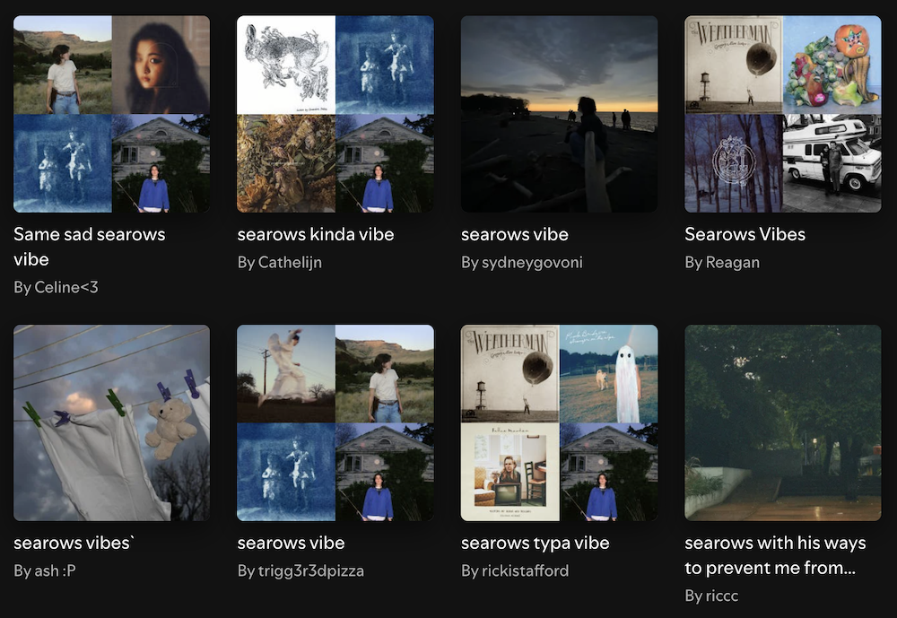

Garden
How I listen
At the time of writing, January 2025, I have an active subscription to Spotify. Aware of the ethical and political considerations, I make daily use of the service, and use it as a central archive of the records I’ve listened to since the late eighties.
Discovering new music
I reject Spotify’s AI strategy which takes the shape of “Made For You” playlists. Instead, I look for user-created playlists, usually by searching for artist name + vibe.

In addition, I enjoy reading the work of music critics, especially outside of their regular context of a magazine or other publication. Lastly, I enjoy how people like Chris Glass and others feature songs they’re listening to.
Listening to favorites
I treat user-created playlists as mixtapes users made for people like me. I’ll listen for songs I like, and then go from there. Beyond that, my listening habits are album-centered, and not playlist-centered. I’m trying to make an effort to make music less decorative, so I tend to avoid playlists like “coffee house tunes” or “workout jams”.
The repeat feature is set to off by default, making it so that I have to make a conscious choice about what to listen to next, and to give myself the reminder that I’ve listening to work created by a person, just like when I used to listen to physical records.
For each month and year, I create a mixtape playlist featuring my favorites from that period.
- Mixtape 2024 2024
- Mixtape 2023 2023
- Pandemic vibes 2020 - 2023
- Homemaking 2016 - 2019
- Too Hot, Too Greedy 2015
- Deep Conversations in Cafes 2009 - 2014
- I'm Gay and This is Deep 2004 - 2008
- I Just Really Like Successful Women 2002 - 2003
- Forever Scary Spice 1996 - 2001
- Toy piano renditions 1987 - 1995